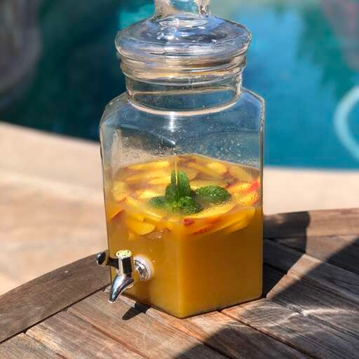

White Peach Sangria

Description
This refreshing white peach sangria recipe is easy to make and always a hit at parties! A summer classic!
Ingredients
- 1 (750 milliliter) bottle dry white wine
- ¾ cup peach flavored vodka
- 6 tablespoons frozen lemonade concentrate, thawed
- ¼ cup white sugar
- 1 pound white peaches, pitted and sliced
- ¾ cup seedless red grapes, halved
- ¾ cup seedless green grapes, halved
Steps
- Combine white wine, peach vodka, lemonade concentrate, and sugar in a large pitcher; stir until sugar is dissolved. Add sliced peaches, red grapes, and green grapes.
- Refrigerate sangria until well chilled and flavors have blended, at least 2 hours to overnight.
- Serve over ice, and use a slotted spoon to include sliced peaches and grapes with each serving.
Back to Home!